Perfil
Integradora de Contenido con más de 10 años de experiencia transformando contenido académico e institucional en experiencias digitales claras y de alto impacto.
Combino diseño UX/UI en Figma, maquetación HTML5/CSS3 y desarrollo de producto end-to-end, incluyendo una aplicación web propia en producción, con una base sólida en identidad visual, redacción y estrategia de contenido.
He integrado contenido para los LMS Canvas (Universidad Anáhuac Online) y Brightspace D2L (IBERO), y fui profesora de animación, diseño multimedia y marketing digital en la Universidad Anáhuac del Sur.
Caso 01 · Diseño de campaña
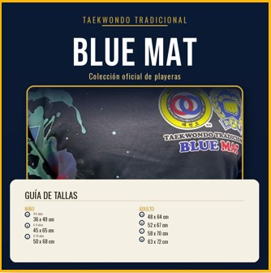
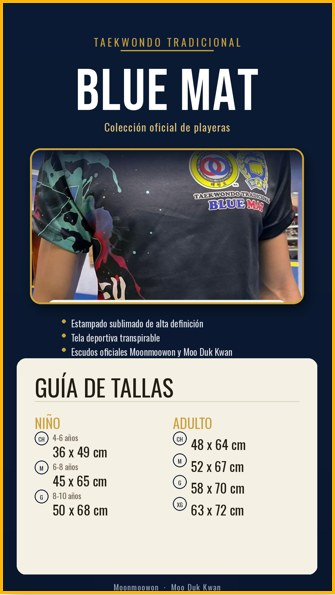
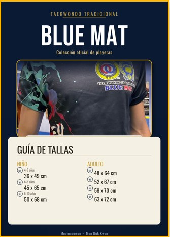
Caso 02 · Producto digital
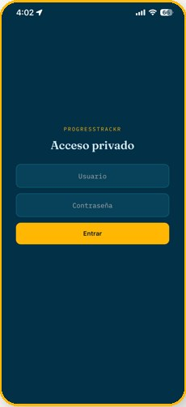
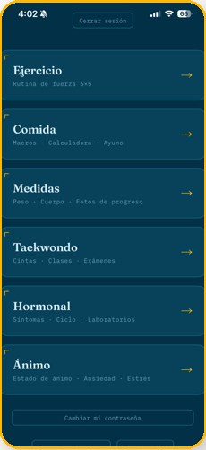
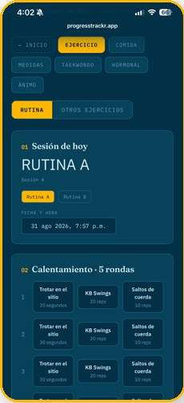
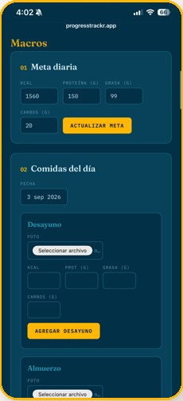
Caso 03 · WordPress y membresías
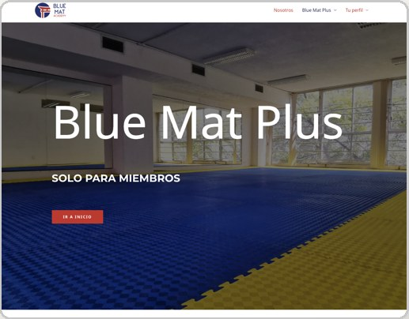
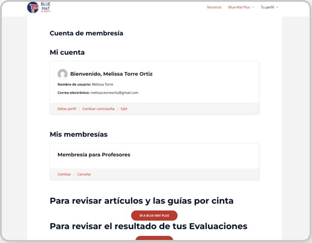
Caso 04 · Contenido educativo en LMS
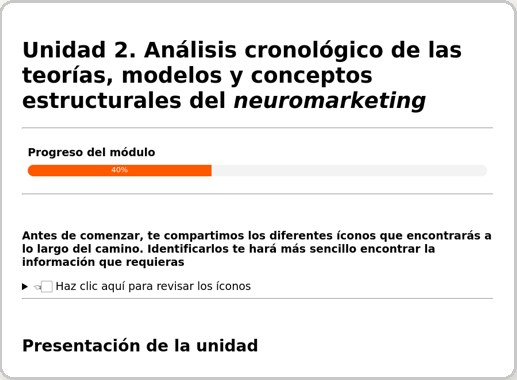
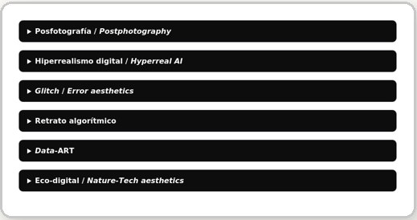
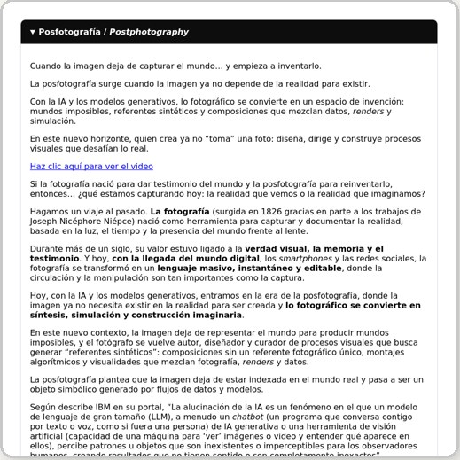